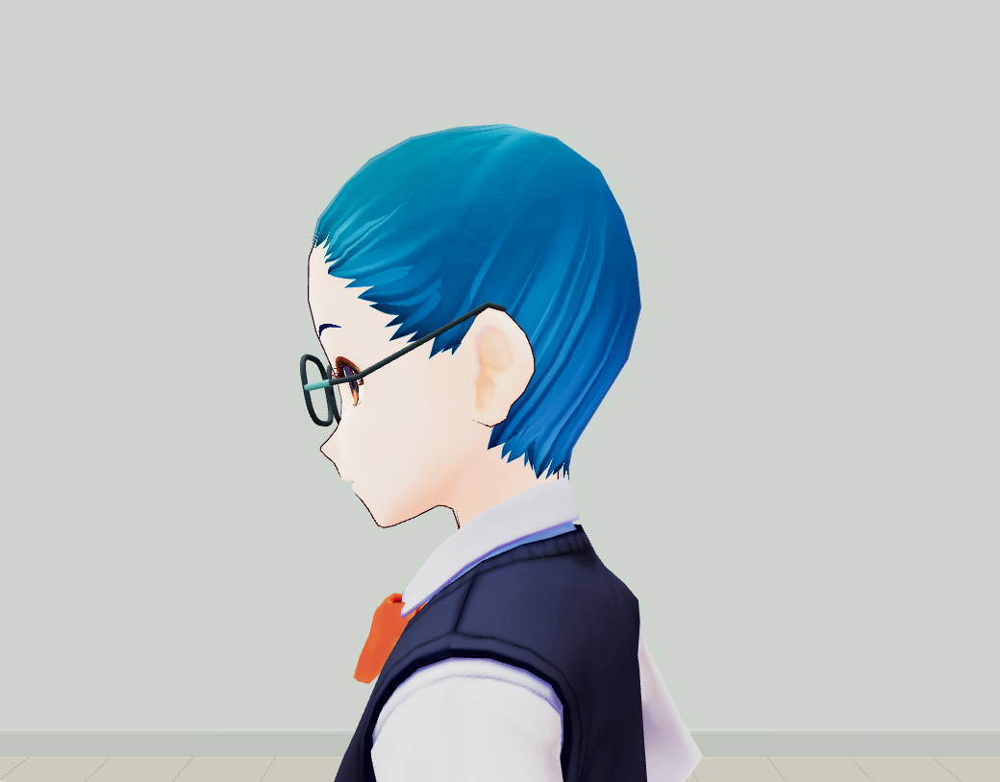
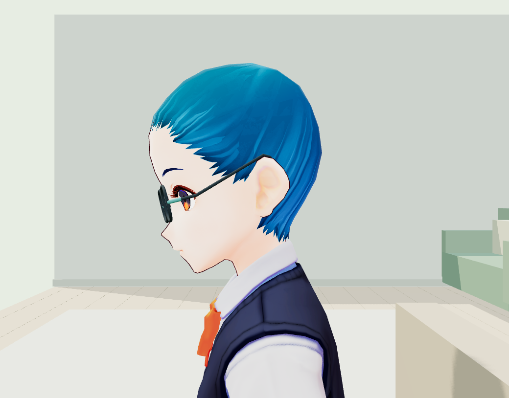
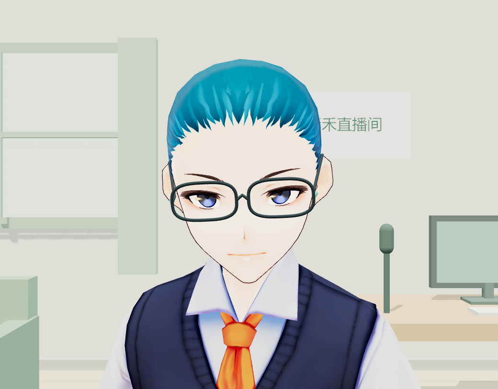
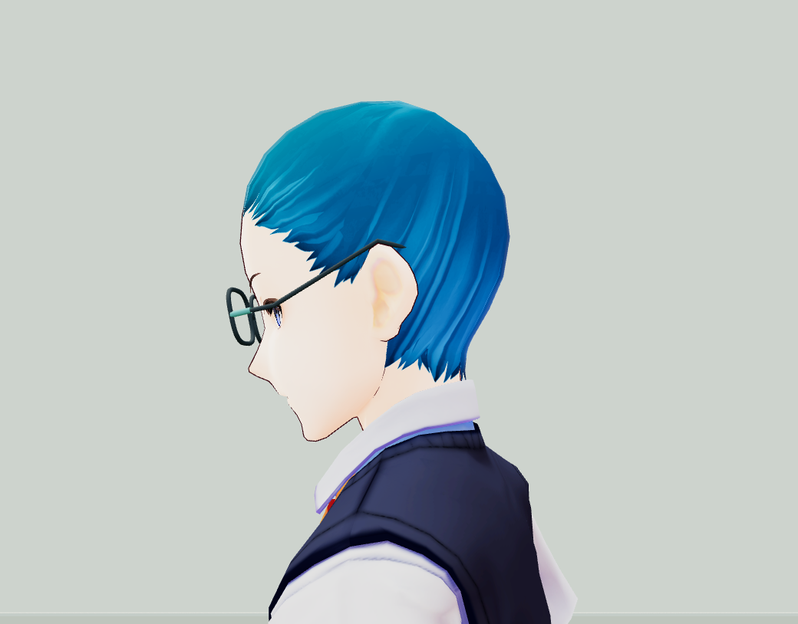
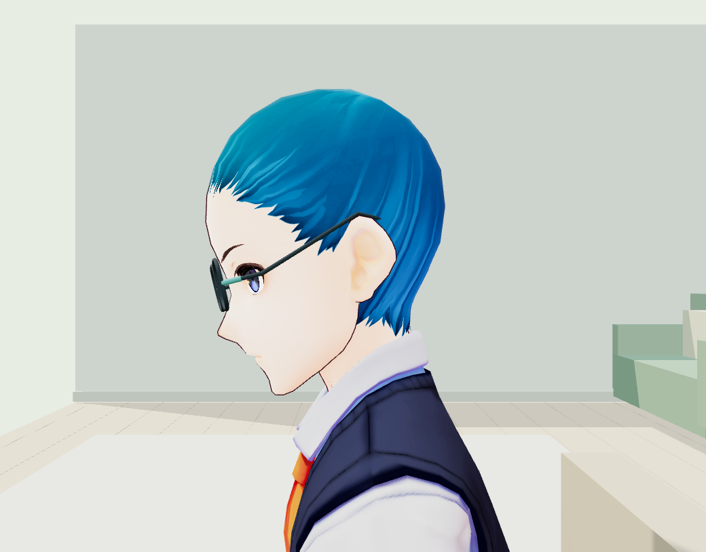

固定游戏构建 4540a27be60e。两位角色均从原签名恢复，再通过诊断入口佩戴候选眼镜。点击照片可查看原始尺寸。





女性镜腿靠近耳朵上沿，侧图可观察支撑位置。女性和男性各两个姿态的皮肤交对分别从 80 和 84 降至零。原发片交对增加，透明发丝的视觉遮挡与实际耳部接触仍需分别判断。原签名保持未佩戴状态，正式默认组合继续使用原有规则。
浏览器逐项结果 · 表面相交的计算口径 · 原始未适配多角度采样 · 身体、原始记录和适配版本 · 固定构建与复现